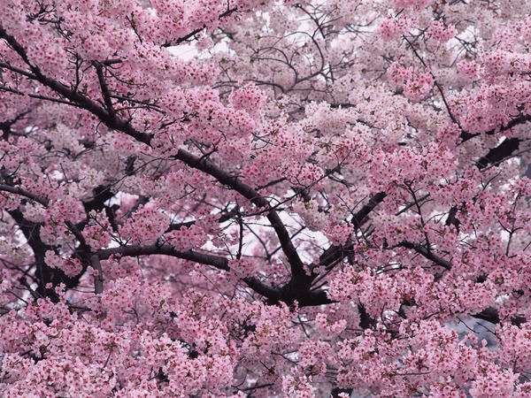
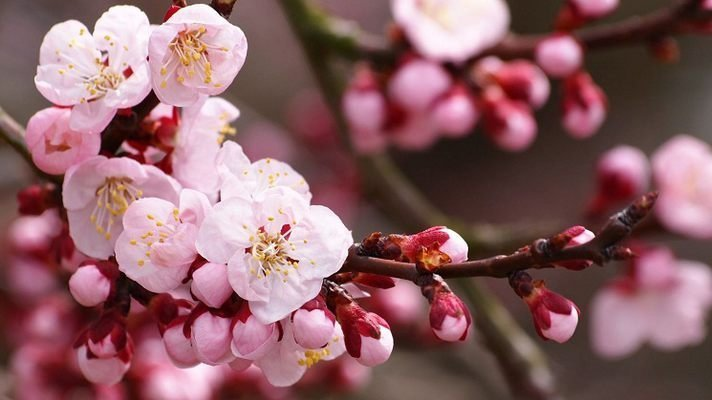

the coldest season of the year, following autumn and preceding spring. In temperate latitudes, it lasts for three months: December, January, and February. It is characterized by short daylight hours, low temperatures, and precipitation in the form of snow.